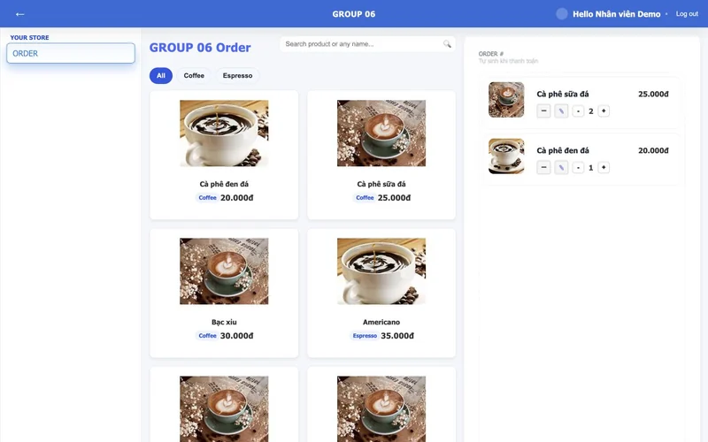
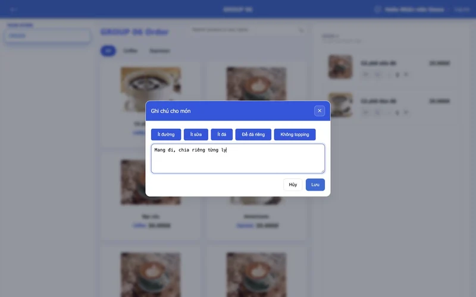
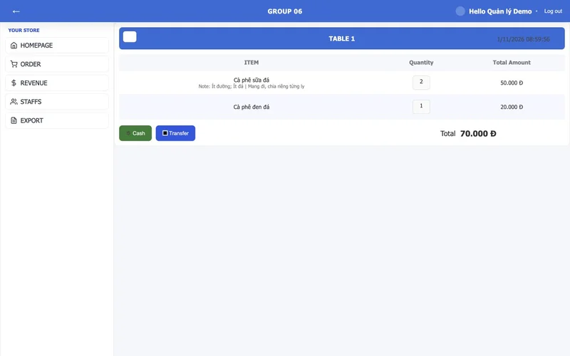
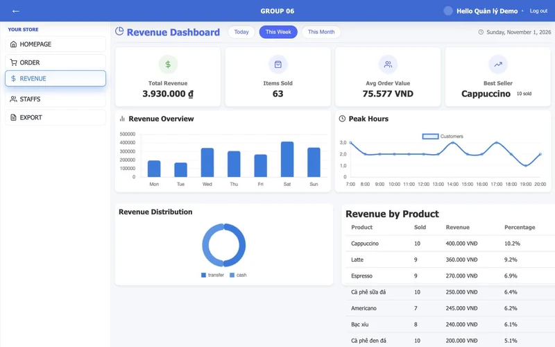

TEAM PROJECT / POS
Coffee ShopSoftware for the everyday rush.
A POS flow built around the people behind the counter.
At a glance
- Problem
- Connect staff ordering, role-specific operations and management reporting.
- My role
- POS/order module, system UI/UX and requirements analysis in a team of four.
- Delivered
- A coffee-shop management product deployed for use at a GUTA shop.
- Key decision
- Model the POS and order journey around the staff workflow.
THE CONTEXT
Coffee Shop / the problem
A real coffee shop needed staff ordering, role-specific operations and management reporting in one daily-use system.
Owned the POS and order module, requirements analysis and system UI for a coffee-shop management product.








THE WORKFLOW
Follow the
business rule.
A simplified path through the system. Each step has an explicit responsibility.
- 01
Browse
Staff browse drinks by category — the POS module I built end-to-end.
- 02
Cart
Real-time cart with per-item notes (preset tags + free text).
- 03
Checkout
Review items, quantities and notes, then choose cash or transfer. The cash path was exercised in this capture.
- 04
Success
The UI shows a success screen; the tested order, payment, quantities and note were confirmed in PostgreSQL.
- 05
Dashboard
Managers access revenue summaries, hourly activity and product breakdowns. This reporting screen is team-product context.
ENGINEERING DECISIONS
The interesting
part of the work.
The constraints, the trade-offs,
and how I approached them.
01Circular foreign keys: orders.payment_id → payment and payment.order_id → orders.
+
The schema declares DEFERRABLE INITIALLY DEFERRED foreign keys between orders and payment. The current checkout controller creates the order, lines and payment in separate steps; wrapping the full operation in a shared database transaction remains a hardening task.
02Heavy analytics queries on the manager dashboard, plus keeping staff out of it.
+
CTEs build the revenue aggregates, Promise.all() runs 9 analytics queries in parallel, and values are cast ::int/::bigint in SQL to avoid string/number bugs in JS. RBAC: a RequireAuth guard on the client + an authorize(...roles) middleware factory on the server.
EVIDENCE & SCOPE
What was delivered.
What it means.
The local POS flow was exercised from menu selection and item notes through cash checkout. PostgreSQL confirmed a 70,000 VND order, two lines, three drinks and the saved note. Screenshots use synthetic data; the separate reporting UI includes documented local API/number-format fixes.
What I take from this project
- Checkout needs a clear user journey and an equally clear transaction boundary.
- Separate staff tasks from manager tasks in both the interface and server authorization.
Scope & limitations
- Team of four. My ownership was the POS/order module, system UI/UX and requirements analysis.
- The project was deployed for use at a GUTA coffee shop; no current usage analytics or uptime claim is made.
- These screenshots show a local demo with synthetic menu, accounts, orders and reporting data. Report figures illustrate the interface and are not business results or validated financial analytics.
- Reporting needed local fixes to send the existing JWT and handle PostgreSQL numeric strings. These are recorded with the capture assets and have not been pushed to the source repository.
- End-to-end checkout atomicity and checkout-endpoint authorization are hardening tasks in this source version. Bank transfer was not exercised.